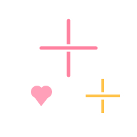

⚙️ Settings
ปรับแต่งพื้นที่ส่วนตัวให้อบอุ่นถูกใจคุณ ♡
🎨 Scrapbook Themes
เลือกธีมและโทนสีที่คุณรู้สึกสบายตาที่สุด
👤 My Nickname
ตั้งชื่อที่คุณอยากให้ Safe Space เรียกคุณในหน้าแรก
สวัสดี, เธอ ♡ ขอให้เป็นวันที่แสนอบอุ่นนะ

✏️ Font Style
เลือกรูปแบบตัวอักษรสำหรับไดอารี่และเว็บไซต์

💾 Data Backup & Restore
บันทึกข้อมูลทุกอย่างเก็บไว้ หรือย้ายข้อมูลไปยังอุปกรณ์อื่น
🗑️ Reset / Danger Zone
ลบประวัติการเขียน Journal, อารมณ์, จดหมาย, และรูปภาพทั้งหมดใน Safe Space
Safe Space ♡
v1.0 (Phase 1-3 Complete)
พื้นที่สบายใจ สำหรับบันทึกความรู้สึก อารมณ์ และช่วงเวลาดีๆ ของคุณ
made with all our love and care 💕